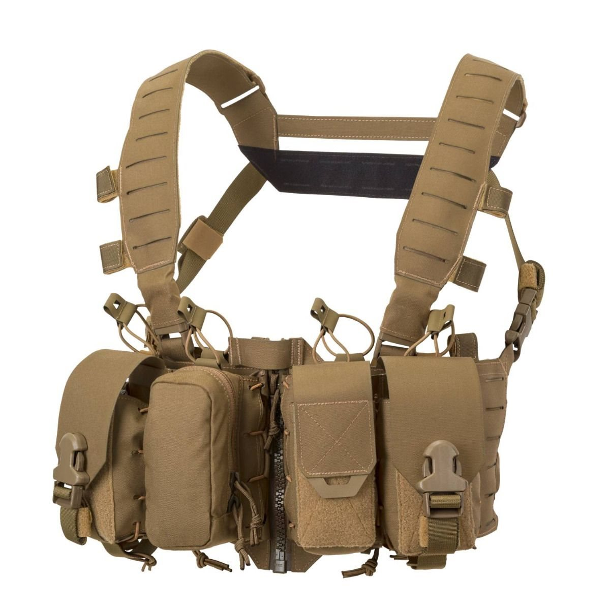
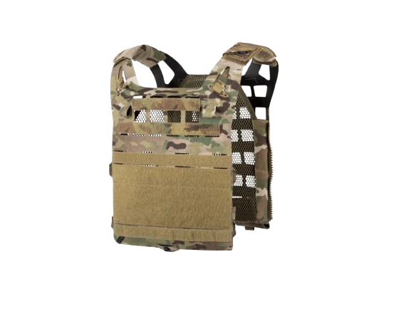
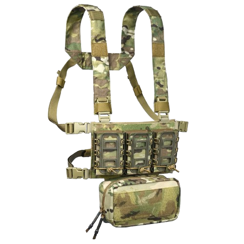
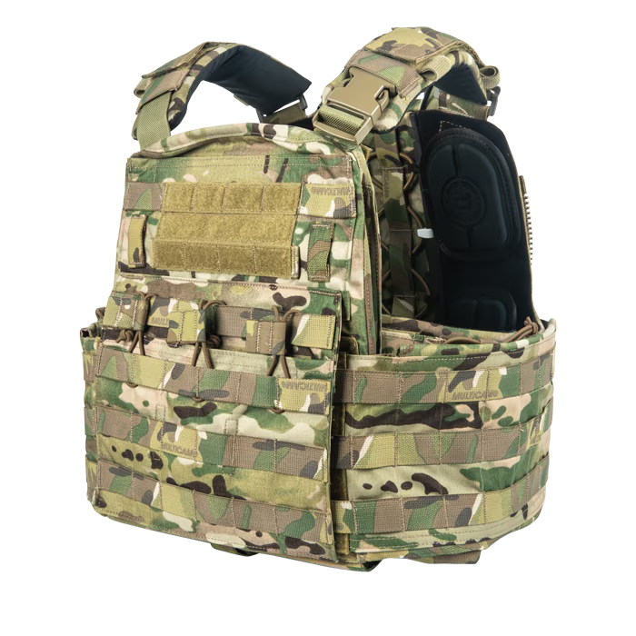
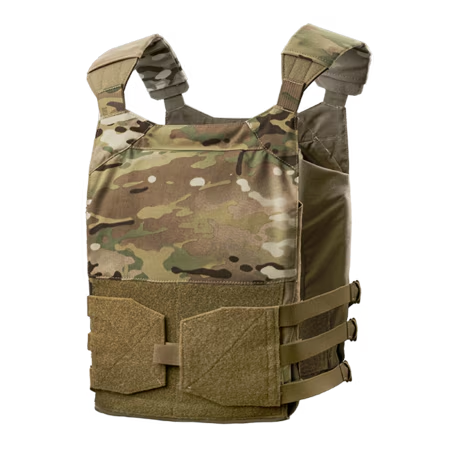
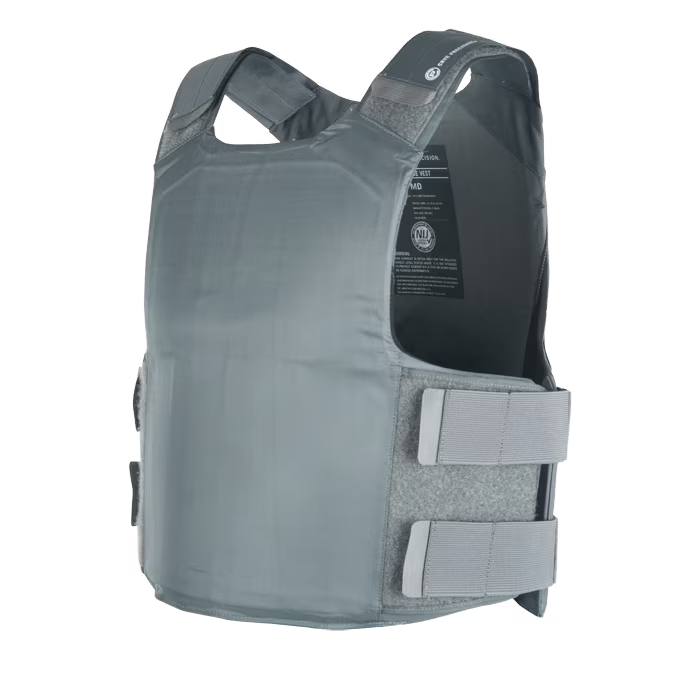

Rigs are a type of gear that allow you to carry extra magazines, grenades, and other equipment. They come in a variety of styles and sizes, and can be worn over your clothing or under your armor.

Fixed Chest Rigs are designed so the pouches are not able to be moved or removed. This means it is more secure for carrying your gear, but it is unable to be modified.

A Molle chest rig uses webbing and velcro which lets you attach and move pouches where you want them. It is highly customizable, making it good for designing different loadouts, but it can be heavier and takes more setup time.

A micro chest rig is a small, lightweight rig designed to carry only essential gear such as magazines, radios, or medical items. It is compact, comfortable, and great for mobility, but it has limited storage space.

An assault plate carrier is built to carry armor plates and a larger amount of gear for frontline use. It offers strong protection, plenty of pouch space, and good load-carrying ability, but it is heavier and bulkier than lighter carriers. Many people playing airsoft use these to simulate a real life combat scenario.

An LPV plate carrier is a low-profile vest designed to carry armor plates while staying lightweight and compact. It offers good mobility and comfort, but has less space for extra gear and attachments compared to Assault Plate Carriers.

An LVS plate carrier is a low-visibility carrier designed to be worn discreetly under clothing while still holding armor plates. It is lightweight, comfortable, and ideal for concealment, but has limited storage and attachment space. LVS plate carriers are bearly ever used in airsoft due to it not being very practical.